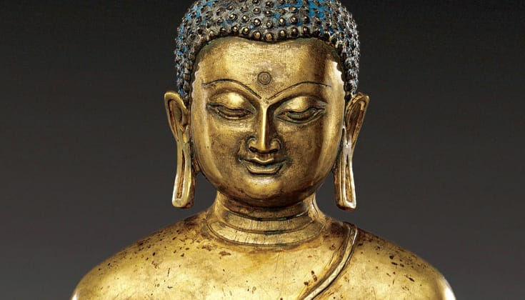
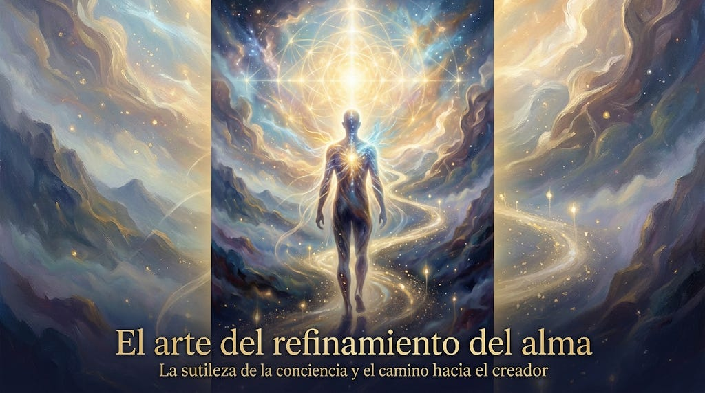

Psicología profunda y bioenergética: La ciencia del corazón espiritual y la higiene emocional
Introducción: De la rumiación mental a la geografía del alma.
Mapas visuales y píldoras de claridad para calmar tu mente acelerada.
Por Andrés Monje de Ciudad. Los textos completos están en Substack.
Introducción: De la rumiación mental a la geografía del alma.

Introducción: La Cruz de Buda en la autorregulación psíquica.

Introducción: La gran escala de la multidimensionalidad y el estado de la conciencia.
Introducción: La búsqueda de sentido más allá de los dogmas.
La trampa del overthinking: la mente egocéntrica frente a la paz del corazón.
En la búsqueda constante de rendimiento y paz mental, solemos ignorar que el mayor obstáculo para nuestra expansión interna es, paradójicamente, nuestra comodidad metabólica.
7 Revelaciones que Cambiarán tu Forma de Entender la Espiritualidad.
A menudo tratamos al dinero como si fuera un ente esquivo.
¿Alguna vez has sentido que estás viviendo en un bucle repetitivo?